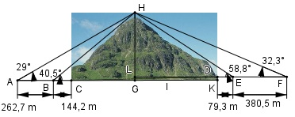

Aufgabe 208 Vor dem Bau eines Bergtunnels braucht man seine Länge l und den Neigungswinkel α. Dazu werden am Tunnelein- und –ausgang 2 Standlinien AB = 262,7 m und CD = 380,5 m abgesteckt. B liegt vom Tunneleingang 144,2 m entfernt, C vom Tunnelausgang 79,3 m. Eine Mastspitze auf dem Berg, die mit den anderen Punkten in einer Vertikalebene liegt, erscheint von A aus unter dem Höhenwinkel 29°, von B aus unter 40,5°, von C aus unter 58,8° und von D aus unter 32,3°. Wie groß sind l und α?

Im Dreieck HLE: (rechter Winkel bei L) LH tan 58,8° = -------------- |*(LD + 79,3 m) LD + 79,3 m LH = tan 58,8° * (LD + 79,3 m) Im Dreieck HLF: (rechter Winkel bei L): LH tan32,3° = ----------------- |*(LD+79,3m+380,5m) LD+79,3m+380,5 m LH = tan 32,2° * (LD + 79,3 m + 380,5 m) Gleichgesetzt: tan 58,8° * (LD + 79,3 m) = = tan 32,2° * (LD + 79,3 m + 380,5 m) tan58,8°*LD + tan58,8°*79,3m = = tan32,2°*LD + tan32,2°*459,8m|-tan 32,2°*LD LD*(tan 58,8° - tan 32,2°) + tan 58,5°*79,3 m = = tan 32,2°*459,8 m| -tan 58,5*79,3 m LD * 1,0215 = 289,6 – 129,4 |:1,0215 LD = 156,8 m LH = tan 58,8° * (LD + 79,3 m) LH = 1,6512 * (156,8 m + 79,3 m) LH = 389,8 m Im Dreieck BGH: (rechter Winkel bei G) GH tan 40,5° = --------------- |*(CG + 144,2 m) CG + 144,2 m GH = tan 40,5° * (CG + 144,2 m) Im Dreieck AGH: (rechter Winkel bei G): GH tan 29° = ------------------ |*(CG+144,2m+262,7m) CG+144,2m+262,7m GH = tan 29° * (CG + 144,2 m + 262,7 m) Gleichgesetzt: tan 40,5° * (CG + 144,2 m) = = tan 29° * (CG + 144,2 m + 262,7 m) tan40,5°*CG + tan40,5°*144,2m = = tan29°*CG + tan29°*406,9m|-tan29°*CG CG*(tan 40,5° - tan 29°) + tan 40,5°*144,2 m = = tan 29°*406,9 m| -tan 40,5*144,2 m CG * 0,2998 = 225,5 – 123,2 |:0,2998 CG = 341,2 m GH = tan 40,5° * (CG + 144,2 m) GH = 0,8541 * (341,2 m + 144,2 m) GH = 414,6 m LG = DK = GH – LH = 414,6 m – 389,8 m = 24,8 m Im Dreieck CKD: Winkel α bei C = Neigungswinkel der Tunnelstrecke: DK 24,8 m tan α = --------- = -------------------- = CG + LD 341,2 m + 156,8 m = 0,0498 --> α = 2,9° LG sin α = ------ |*CD CD sin α * CD = LG |:sin α LG 24,8 m 24,8 m CD = ------- = ---------- = --------- = sin α sin 2,9° 0,0506 = 490,1 m = l